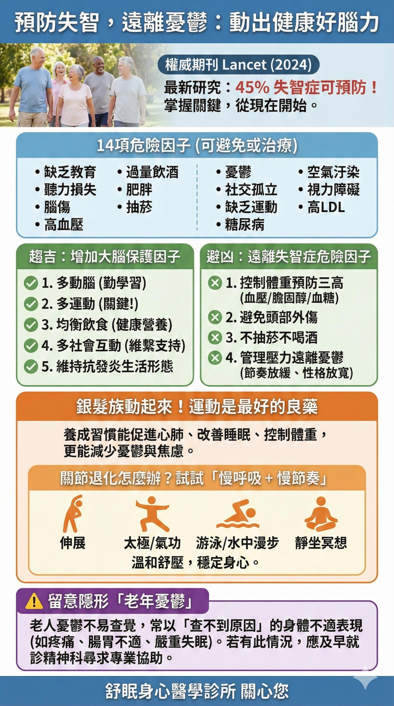

覺得累只想躺著？精神科醫師破解迷思：「運動」才是失眠與憂鬱的特效藥
洪成志醫師 撰文 | 2026/2/27
在「舒眠身心醫學診所」的門診中，我每天都會聽到兩種非常真實的心聲：
憂鬱症的病友無力地說：「醫師，我連呼吸都覺得累，完全沒有動力，我真的不想去運動。」
失眠的病友則焦慮地說：「我昨晚沒睡好，今天白天精神太差了，我需要多休息、少活動，才不會體力透支。」
當我們生病或疲累時，「多休息、少動」是人類的自我保護本能。但身為精神科醫師，我必須告訴大家一個違反直覺，卻被頂尖科學證實的真相：面對憂鬱與失眠，單純的「靜態休息」往往無法讓大腦充好電。相反地，「規律運動」才是大腦真正的特效藥。
一、為什麼「動身體」能治「大腦的病」？
運動對大腦有三大神奇功效：
- 滋養大腦的「奇蹟肥料」(BDNF)：憂鬱症與長期失眠會讓大腦神經細胞萎縮。而運動能促使大腦分泌 BDNF（腦源性神經營養因子），幫助神經元重新生長、修復受損網絡。
- 重建快樂的化學平衡：運動能直接刺激大腦釋放血清素、多巴胺與腦內啡。這些天然的「快樂傳導物質」能快速緩解悲傷，帶來平靜。
- 累積完美的「睡眠驅力」：白天因為累而一直躺著，是破壞睡眠的隱形殺手。透過運動把體力消耗掉，累積「睡眠飢餓感」，晚上的大腦才會發出需要深度睡眠的強烈訊號。
二、《Lancet》最新警告：缺乏運動與憂鬱是失智元兇
近期國際頂尖醫學期刊《刺胳針》(Lancet, 2024) 發表了一項重量級研究指出：高達 45% 的失智症其實是可以預防的！
在這 14 項可避免的危險因子中，「缺乏運動」與「憂鬱」赫然在列。這代表著，運動不僅能治療當下的情緒與失眠，更是長遠來看「保護大腦免於失智」的最強防護罩。此外，我們也要特別留意「隱形的老年憂鬱」。很多長輩的憂鬱症狀不是心情低落，而是以「查不出原因的身體疼痛、腸胃不適或嚴重失眠」來表現。
📊 點擊圖解：預防失智、遠離憂鬱的 14 項關鍵密碼

（點擊圖片可放大查看）
三、長輩關節退化、覺得累到無法動？給您的三個「微起步」法則
要一個身心俱疲，或是有關節退化問題的人立刻去跑步，是不切實際的。重點是「打破不動的慣性」：
- 重新定義運動，從「10分鐘」開始：不一定要去健身房。換上便鞋，走到樓下散步 10 分鐘，大腦就會開始啟動修復機制。
- 利用「早晨的陽光」加倍療效：早上散步 15 分鐘，陽光能重啟大腦生理時鐘，等於同時吃下了「天然抗憂鬱藥」與「天然安眠藥」。
- 關節不好？試試「慢呼吸＋慢節奏」：銀髮族可選擇伸展、太極、氣功、水中漫步或靜坐冥想。溫和舒壓，同樣能穩定身心。
🩺 洪醫師的真心話：把運動當成你的「必修治療」
藥物能幫您及時止血、穩定神經，但「運動」才能幫您把大腦的韌性真正鍛鍊回來。
下次當您覺得因為沒睡好、心情差，或是覺得年紀大了想整天躺在床上的時候，請記得我在診間的叮嚀：給自己一個機會，站起來，走出去。您的每一步，都在為自己的大腦進行一場無可取代的深度治療。